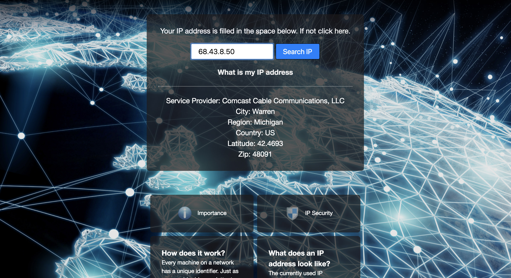

My Projects
-

IP-finder - Used an IP lookup API to quickly and simply integrate IP geo-location into the website to find hostname, network, city, latitude, postal code, and route.
You can see the live website on:
See a live previewAccess view the code with:
Access it on GitHub -

Quiz-App - Created a quiz game that leads the user through a series of questions, focusing on JavaScript data with JSON and arrays.
You can see the live website on:
See a live previewAccess view the code with:
Access it on GitHub -

Bestbuy - Searching for electronic products or get pointers on where to go in order to get the best electronic deals. It uses the Best Buy API in order to make the search. From there you can add an item and store it as a favorite in your list that is very useful for all users. Search for any item in Best Buy.
You can see the live website on:
See a live previewAccess view the code with:
Access it on GitHub -

Yummly full stack and react - Use Yummly.com API to do recipe search for food. Search for any food item of the user's choice. You can add an item from the search results with a click of a favorites button. This was implemented using HTML5, CSS, Javascript, JQuery, AJAX, and Yummly API.
You can see the live website on:
See a live previewAccess view the code with:
Access it on GitHub